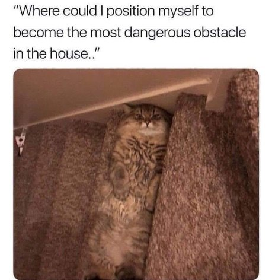

"Thought can only create problems but it cannot help us solve the problems.’"
--UG Krishnamurti
Periodically I’m asked to write a Mind-Tickler that you can do something with.
Because despite all the discussions about how seeking is useless, you wouldn't mind being less triggered, less selfish, more confidant, more free, more enlightened. You wouldn't mind more understanding and knowing what you are or are not.
Perhaps you're certain that the right way is to be ok with everything as it is, but still, the imperfect, does-things-wrong self could use a bit of polishing up.
You want tools to make that happen.
Otherwise why bother with all those podcasts, therapies, inquiries, meditations, satsangs, and spiritual self-improvement books.
Why give a damn about free will, enlightenment, past traumas, or understanding past conditioning. Why care what consciousness is and where one's place is in it. Why care what the “point” is, either.
What’s all that interest for, if not to improve, to feel more right and more complete.
After all, inadequacy, the sense of something missing, the sense of not good enough, the sense of “not there yet,” is build into the system of being a self.
There’s no way to be a person and feel complete. Since humans are not by any means all there is.
So the feeling of missing something, needing something, and not being enough is pretty much guaranteed.
Of course, you could just accept and get used to not ok-as-is. But you'd rather correct it, be a better person, feel good enough, and maybe even wake up while you're at it.
Which is fine. This is as good a way to spend a life, and experience, and be, as any other.
Since even seeking is included in the consciousness experience.
So in the interests of fun, since you’re going to improve and seek anyway, let's explore a few common obstacle-thoughts that might get in the way.
Not because they’re bad. Just because they are effectively diverting from where you say you want to go. And also because, why not.
In no particular order:
1- I already know this - or- I’ve heard this before.
Let’s say this is true. So what? Isn't it irrelevant? Can these delicate ears only take in unrepeated info which has never been encountered before? Where’s the problem in considering something again? Not to mention it’s more likely that it's parroted and someone else’s, not yours, anyway. So can you consider it anew?
2- I should be farther along than this- I should know this by now.
Why? Simply because you read it before, however many times? How does that become a rule for how “far along” you personally should be? And how do you know, what expert keeps the timetable?
3- This won’t help me/do anything to change things.
As if thought knows, in advance, what will help you. Let’s face it, if this was true, why hasn’t thought stepped up already and taken care of things? What’s it waiting for? Could it be it actually has no idea what will or won't help?
And when evaluation of success or failure happens before you even try, there’s only one possible result, which just happens to confirm this thought.
If there’s a thought saying, “I know this won’t work because I’ve tried it before,” consider the possibility that even then, this thought was running and you have never, in actuality, tried before. Where's the harm in trying again?
4- What can I do with this info?
If while you’re experiencing something, you’re trying to figure out how you can make use of it later, you’re not really taking it in, you’re strategizing before even fully getting the thing you’re hoping to use. It doesn’t matter what you do. Leave the doing to whatever is in charge of that.
5- Others don’t have this problem.
Can you ever be certain that what others say and show you is all there is? Interesting how effectively and conveniently this comparison confirms your own inadequacy.
6- No one else has it this bad- no one understands me.
Yes because you’re so complicated, and so special, so off-the-charts messed-up, that only you are, or can ever be, the problem. Only you, alone in the universe in your badness. That sounds exactly like how existence and consciousness works, right? (sarcasm)
7- This is what I believe/ I don’t believe this.
When considering something new, does it matter what you believe already? How can anything new get past this? Maybe you don’t have to believe in order to consider something else. Maybe you can look at it, consider, and throw it away later if you still want to.
8- What’s the point?
Ah yes, mind’s favorite last resort. What wants and needs a point in order to think about something in a new way? What needs to have a point at all, in order to exist?
So there you go. A few thoughts to play with.
For fun. For novelty. For curiosity.
Do you have to do something with them, get somewhere with them?
Of course not.
The self's imperfections, and not-getting-its, and wanting something differents, and inadequacies will continue, regardless.
Nothing wrong with that.
Nothing wrong either, though,
with looking at obstacles in a new way,
and maybe even occasionally
getting
what you want.
Because it could just be that
there's no obstacle
even to that.
Obstacle Thoughts
